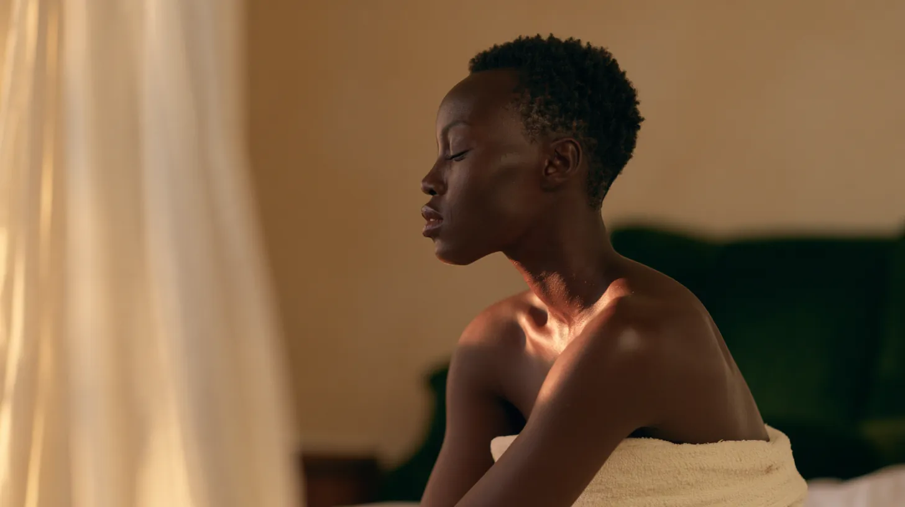
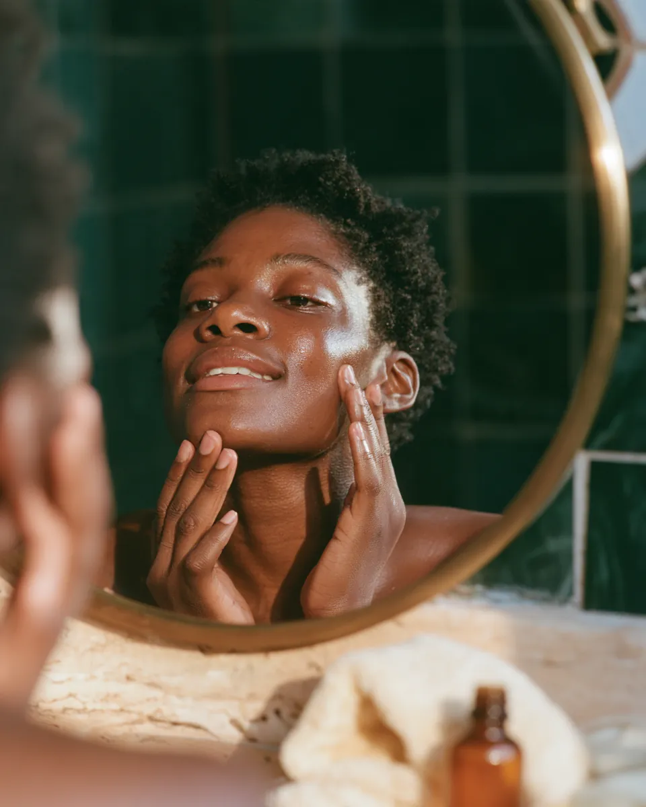
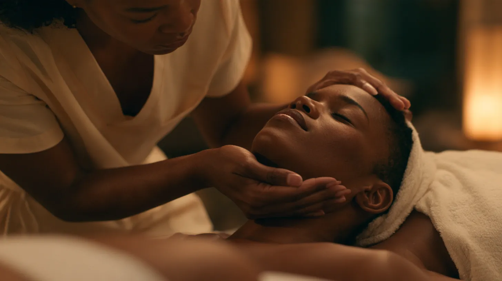
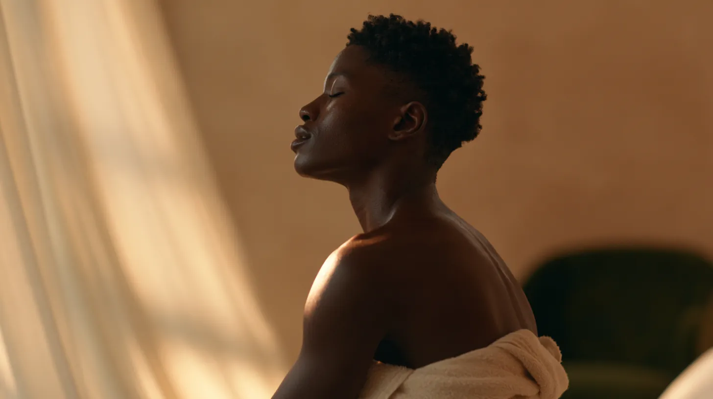
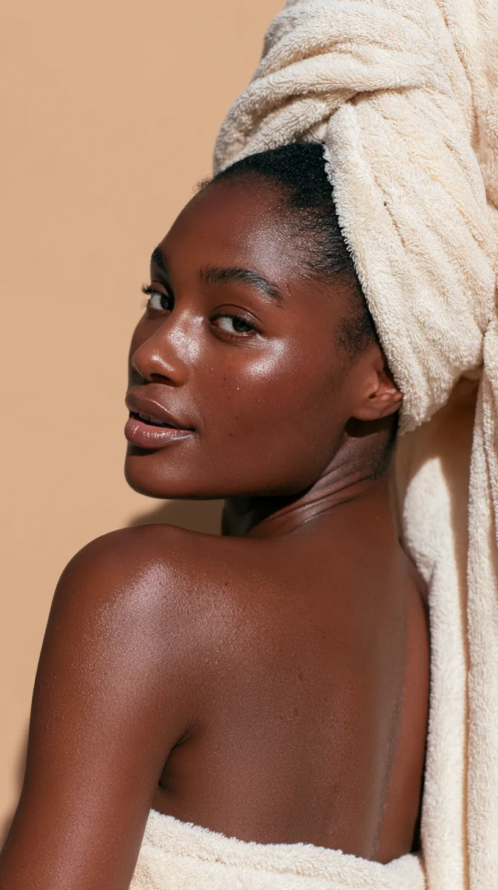

Hands That Listen
Why you chose melanin-rich skin, in your words, in your treatment room. Your hands at work, your clients at ease, and the moment someone sees their own skin clearly for the first time.
 For Patricia O.
For Patricia O.
Storytelling, cinematic film and a signature campaign for SKINPLUSBYOROYO, shot in your studio in Little Elm.
“A creative partner to elevate our brand through professional storytelling, cinematic videos and a signature advertising campaign.”Patricia, in your message to us
The proof is already real. You built a studio where melanin-rich skin is the specialty, not the exception, and your reviews say so.
Our job is to make that story impossible to scroll past.

Each one is shot in your studio and runs under two minutes. Each is cut for your website, your Reels and your ads.
Why you chose melanin-rich skin, in your words, in your treatment room. Your hands at work, your clients at ease, and the moment someone sees their own skin clearly for the first time.

Real clients, their own words, one short film each. Razor bumps, PCOS hair, dark marks: what they lived with, and what changed when they found a studio that understood their skin.
Every frame graded to your palette, so it reads as SKINPLUSBYOROYO before the logo appears.


SKINPLUS says it out loud: skin, plus something. Every spot finishes the sentence with what your client comes away with.
 skinplusbyoroyoskinplusbyoroyoskinplusbyoroyoskinplusbyoroyo
skinplusbyoroyoskinplusbyoroyoskinplusbyoroyoskinplusbyoroyoThe butterfly from your logo opens on the skin, lifts away, and lands as your mark. Seen once, it's a nice moment. Seen fifty times, it's your brand.
The questions your DMs ask every week, answered in your look and your voice, without stopping a treatment to film.
We built this preview from your public photos and videos so you could see and hear the idea as yourself. Nothing goes live without your yes.
This one walks a client through your laser prep, word for word from your website.
Use it for the things you explain every day:
Tell us who you want to reach and what you want them to feel.
Every frame drawn out first. Nothing is filmed until you approve it.
Filmed in Little Elm with your space, your hands and the clients who want to be on camera.
Cut for Reels, Stories, ads and your website, with captions and sound.

Fifteen minutes, whenever works between your appointments.
Creative director in Dallas–Fort Worth for fourteen years. Photography, film, motion graphics and AI production, made under one roof. See the work